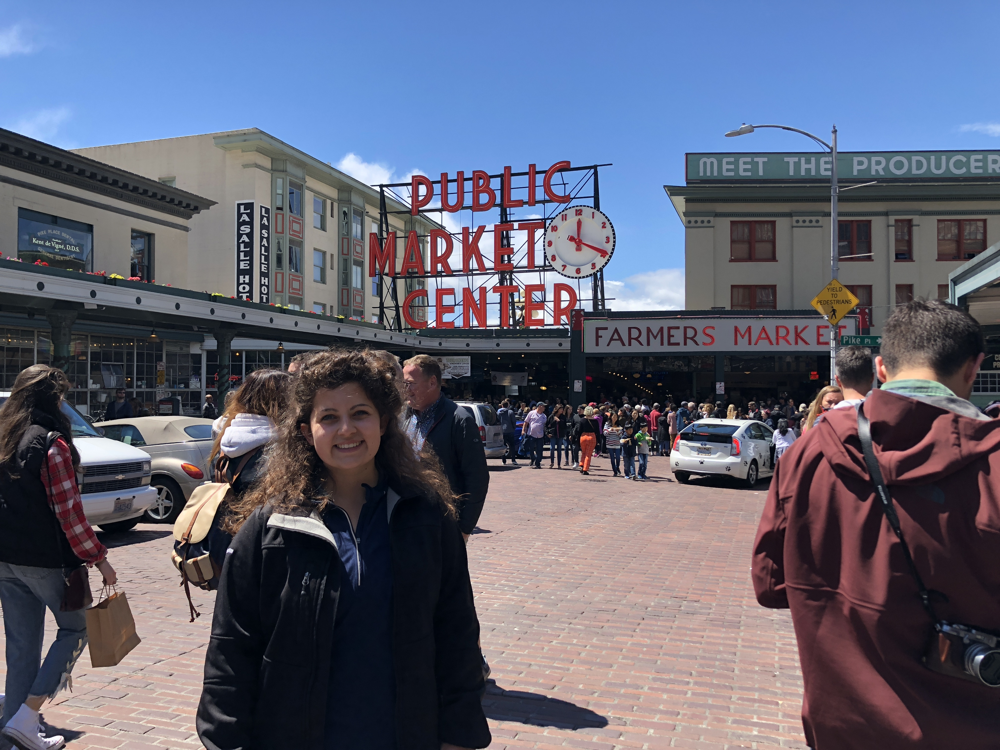

Click here to view more images as part of Olivia's blogs.
I was confused as to how one can tar file all of the files from a repository which is a requirement of the program for the 2nd stipend. I clicked a random 2017 DREU participants website. I noticed that she used a github repository as her host. I saw that she left her contact information on the web page and decided to reach out. Why not, right? The worst that’ll happen is that she wouldn’t respond. She responded immediately. “Okay, so if you have a Mac, go where you store the folder with all your website documents. Do you know how to use terminal? If so, change to the location where this folder is, and run this command: tar czf folder_name.tar folder_name This will create a tar file of all your documents.” This was incredibly helpful. Thank you Sarah! Lessons Learned (before stepping foot in WA): Don’t be afraid to ask for help. Reach out to others when you are unsure of something and have Google searched yourself. Try new things, even if they are scarily full of code.
Well, my official first blog begins as I just moved to Seattle from Pennsylvania. After taking 3 trips to Target, Safeway and Walgreens on my move-in day, I recommend that when you plan for a temporary move and you think you have planned your packing lists enough, continue to plan/pack more! At the airport for my 5:40am EST flight, my two suitcases weighed in at 45 lbs each...little did I know, that wouldn’t be enough. Stay awake as long as possible on your first day of a dramatic time change. Don’t knock yourself down for being tired in the first few days of that time change because your body needs to adjust.
Moving to UW: At the University of Washington, the gym allowed me to be a “Special Circumstance” to obtain a student gym membership for the summer at only $87 (which, believe it or not, is very affordable in this town). After prior research and an email from my professor/research mentor to the UW Rec Center (recinfo@uw.edu), I was able to obtain this pass. Mental and physical health, as well as wellbeing is important to maintain throughout the summer! Also, Seattle is quite cold at night in June. It drops to around 50 degrees every night. And, coming from someone who only packed sheets and no comforter/blanket for the summer, pack or mail a comforter!
Research: As expected, a ton of amazing work is not only being done in the DUB group at the University of Washington which combines the iSchool, Human Centered Design and Engineering department, the design department and the Computer Science department, but just within the lab of my research mentor, Dr. Julie Kientz. Thus, after discussing a summer plan, I didn’t quite choose one specific project since so many projects appealed to my diverse interests in health, design, innovation and family informatics. She has several incredible students and I spent the first two days reading their most recent papers to further assess my interest in their projects including: Incloodle, BabySteps and Family Sleep Informatics. Additionally, on my first day, I had the opportunity to attend Dr. Daniel Epstein’s defense talk on Everyday Personal Informatics. This was especially interesting to me because of my passion for the technologies that allow consumers to track and share their data from weight loss journeys to running maps. Attend talks and sessions whenever you can.
Weekend: This past weekend, I went to the University District Farmers Market, which is held weekly on Saturday’s from 9am-2pm. Additionally, I finally had the opportunity to visit the Amazon Go store to see cutting edge technology at work and checked out Pike Place Market and the surrounding area!
Research: Throughout my first full week, I explored a research topic that I’d like to work on this summer, surrounding the presence of sociable robots in family homes with children aged 4-12. Previous work seems to not focus on low SES populations and I’m interested in the way that those families interact with the devices at home, and how they feel about the possibility of their children anthropomorphizing Alexa or Jibo at a young age. I’m interested in exploring parent’s perspective on privacy with AI devices throughout their home and how invasive they are willing to allow sociable robots to be in the home of young children. I began considering several research questions and how we might answer them this summer. Additionally, I had the opportunity to learn more about Dr. Laura Pina’s family sleep research by attending an analysis meeting with her team. I wish her the best of luck in her new position at Google. Fun Fact of the Week: More than 75% of positive Amazon reviewers of Jibo, the fun, sociable robot of the future, call the robot a “friend,” “part of the family,” or “great company for those living alone.” You can bring Cynthia Breazeal’s brain child Jibo home for only $699, with a current Amazon coupon! And if you’d like, send me one too :)
Weekend: This past weekend, I went on a 7 mile bike ride (the longest of my life) to Bellevue, WA. Pro Tip: Bring Water. Also, if you make trip, do it on a real bike and not a bike-share bike. There simply aren’t enough gears for all of the hills. The bridge over Lake Washington was very long! There is an awesome movie theatre, Cinemark Reserve, in which you can watch the movie from a recliner with full-service restaurant and bar available from the chair! I went to see Incredibles 2. It was awesome. If you don’t have plenty to spend at Gucci, Louis Vuitton, etc., I don’t recommend walking to the Shops at the Bravern. But, there is a huge mall called the Bellevue Collection, that is very typical and has a ton of shops. There are a few good restaurants around the mall and I ate dinner at Lot No. 3 which had awesome sliders (Pb&J &Bacon Slider and a Gruyere Cheeseburger Slider on happy hour :) On Saturday, I biked down to the South Lake Union Saturday Market. There were tons of tasty vendors. But, I biked down and trusted Google maps too thoroughly and had a bike accident. On Sunday, I went to the Portage Bay Cafe for brunch. It was AMAZING. They have a berry bar! 10/10- would reccomend.
Research: In meeting with Dr. Kientz, early this week, we discussed several ideas for where I want to go with my research questions and what methods I can use to test them. Since there is already a Mozilla-funded research study in-action, involving the deployment of Echo devices in family homes, I will simply add on several of my research questions to the post-interview. I hope to also build an online survey to fill in the gaps in our research questions and make up for limitations in the survey. Hopefully, this survey will help researchers and tech designers understand the perspectives of parents opinions regarding the benefits and burdens of technology in the home. Also, we discussed how ideal/ fundable research should lie in Pasteur’s quadrant, as visible in the image below from Openeducationresearch.org. Additionally, I was excited and applied for various funding/opportunities to attend the Grace Hopper Celebration of Women in Computing. I hope it works out. I would truly appreciate the opportunity to engage in conversation with such incredible women. This week, I went to a Personal Informatics meeting with other undergraduates as well. Also, I had the incredible opportunity to take a research field trip into the actual field with a Senior Researcher at Mozilla. It was so surreal to do work that I’d love to do in the future. I truly enjoyed interacting with the participant, spending the day with them, and thinking about research questions similar to my own. I learned a lot and look forward to opportunities like that in the future. Thank you Janice and Mozilla!
Not so Fun Fact of the Week: There were 1,205 reported bicycle accidents in 2017 according to the Washington State Department of Transportation, 504 of which occured in King County, which includes Seattle and is the 13-th most populous county in the U.S. So, wear a helmet and don’t trust Google maps blindly.
Weekend: This past weekend, I crossed multiple lines off of my Seattle Summer Bucket List, including a trip to Cedars , a Frans Chocolate Tasting and bike ride to Fremont, Eltana, The Sunday Market, Theo’s Chocolate Factory/tour, Caffe Ladro, roaming the various shops and boutiques). Can you tell I completely skipped the gym and acted as my foodie self? Pro Tip: Definitely attend the last tour of the day at Theo’s because they are extra generous with the samples :)
Research: On Monday, I learned how to translate my Python skills from the Penn State online classroom in Zybooks to actual practice in the terminal, using Linux and python. After a few hours of confusion, I learned “how” to operate the command line, read a crawler and parser from another researcher and adapt the parser to more of what I need with respect to Amazon Review classifications (1-2 negative, 3 neutral, 4-5 positive). I have a few issues but reached out for help. - On Tuesday, I unfortunately had to cut the day short when I got sick (I hope I’m not but I think I might be developing some food intolerances- yucky!) But, later in the evening, I edited the Crawler that I’m using to scrape Amazon Reviews for my Echo Device analysis to stop timing out after scraping only a few hundred pages of reviews instead of the thousands that I need. So, now it is downloading extremely slowly but it is working! Additionally, I contributed to the post-interview questions for the Amazon Echo device deployment piece of the project that will ask the participants after they complete the month-long study. Throughout the rest of the week, I prepared literature in the realm of participatory design with children, and also spent more time scraping Amazon Reviews and working with the hundreds of thousands of lines in Excel. I attended a talk by Michael Smith, the Director of the Masters Program of Human Centered Design, on the critique of design work. Also, I developed lists of age-appropriate skills that our study participants can use with their Echo Dot’s to interact with Alexa. On Thursday, I met several KidsTeam researchers. We will be working and designing with children, aged 7-11, for a week this summer on several projects. I look forward to that! On Friday, I continued digging deeper by cleaning up the mess of thousands of Amazon Reviews for several products. I look forward to developing a coding scheme, probably next week.
Lessons Learned: If you ever feel that you are doing something that is manual when it comes to manipulating data, there’s almost always an easier process! Ask questions and google many times!
Weekend: This past weekend, I enjoyed a going-away/celebratory party for one of our lab mate’s who recently started a new job at Google. It was nice to get to know other professors in the DUB group (Design, Use, Build group @ the University of Washington). On Sunday, I cooked and prepped my living area for my best friend from Penn State, who is visiting next week! This week, I was in Capitol Hill and went to Bakery Nouveau, and it was AMAZING. I got a crossiant that was bake in Simple Syrup and an almond paste of sorts. It was so delicious. I ate it too fast to take a picture :(
Research: This week, I began by completing the scraping and cleaning process of Amazon Reviews related to Echo devices. I reduced roughly 200 thousand reviews down to a filtered amount of roughly 7200 reviews. I then randomly assigned numbers between 0 and 1 to each of the 7200 lines in my excel spreadsheet to then shuffle the order of the reviews, instead of being in chronological order, grouped by device (i.e. Echo Dot, Echo Plus, Echo, Echo Show, etc.). I attempted to filter out as many false positive reviews that addressed the way that a “grandmother” used an Echo Show to communicate and she loves it, as opposed to the use by grandmother with a child. My goal is to gain meaningful insights as to the ways that parents and their children benefit from the use of digital home assistants and how they feel burdens from the use of the devices. In addition, this week, I helped Erin set up several tablets that will record the conversations that families have with their Echo Dot’s and I started working on the transcriptions of family conversations. In the first few dozens, I have quite a few false positives, so hopefully, the next batch will be better. I also worked on the literature review for the paper that I’ll write with Erin and my mentor on they findings from the deployment study.
Fun Fact: It is possible to get half of your servings of veggies for the day on one turkey burger! I met up with research friends from Indiana University down at 8 oz. Burger this week. I had a turkey burger with a lettuce bun.
Weekend: This weekend, my best friend from Penn State visited from Pennsylvania to explore Seattle. It was so nice to have someone here from home. We visited Bainbridge Island, checked out the Space Needle, explored restaurants and brunches across Seattle and laughed endlessly. I’m so thankful to have such a wonderful best friend. !
Research: This week began with work on the Amazon Echo deployment with hours of transcription, several initial home visits, and meetings. I worked on paper reviews for our KidsTeam literature review and later spoke with my collaborative KidsTeam student work group. We discussed the three research papers that we read this week. On Tuesday, our Echo deployment team met. One of the professors offered a great piece of advice- when negotiating for jobs in academia or industry, always ask for more time and space, money is an easy question in comparison. Once you start, you will have less space and time but it’s easy to ask for more money. On Tuesday evening, we interviewed and setup the Echo device with one of the families in our deployment study. It was a great experience! On Wednesday and Friday, we went on two other initial home visits. I wish I could share photos of all of the incredible interactions that I’ve had with children but with participant privacy and the Institutional Review Board in mind, I can’t. Throughout the rest of the week, I worked on literature review, wrote my mid-summer report and got really great news. I was selected to present this research at Grace Hopper with the Computing Research Association! I am absolutely thrilled and look forward to it greatly.
Weekend: This past weekend, I went to the Ballard Seafoodfest! I ate some yummy scallops and explored the area! I also explored Green Lake. It’s beautiful.
Research: To begin the week, I worked on the analyzing a paper papers for related work in the broader team’s literature review. Also, I transcribed several days of audio recordings from one family that is participating in the Echo deployment study. It’s funny how many times a child can listen to the same song over and over again!! In the middle of the week, I shifted focus to my individual project and I’m finally closing in on over 150 Amazon Reviews being coded. I’m going to continue to analyze my sample until I feel that i’ve reached saturation. I also went on another home visit for another family’s onboarding into the study. This time, I led interview and Dr. Kientz was there for support. Towards the end of the week, I met with two women from industry in the UX/HCI space, from Starbucks and Amazon. They were extremely helpful and I’m truly thankful for their time and expertise. Additionally, I worked more on analysis of Amazon reviews and I feel that my codebook is becoming more precise and effective.
Lessons Learned: One of the people that I spoke with from industry shared an anecdote about the job-search. She shared a story of looking at UX design portfolios. Although you may focus on sharing a great presentation of each work that you are sharing, everything must come together on the portfolio cohesively. Everything that you present or submit in the job application process allows for an assessment of your work and skills.
Weekend: This past weekend, I went back to Green Lake and also discovered an amazing restaurant, Bongo’s. My boyfriend is here to visit and he loves Caribbean food. It was amazing! Also, we went down to the Bite of Seattle, which is an outdoor food and music festival held near the Space Needle each summer.
Research:I began with week by spending a lot of time working on transcriptions of audio recordings of the ways that families are using the Echo devices. Although I can’t share much yet, the findings will be quite interesting. We are feeling a bit of a rush to transcribe because we need to analyze the data and write up our findings. Additionally, I spent time reading about design research with children and ethics, in preparation for KidsTeam UW next week. We will be working and designing with children, aged 7-11, for a week this summer on several projects related to creepy technology, digital voice assistants and learning games. We also set up for next week’s KidsTeam on Thursday by prepping the “Bags of Stuff” for design activities and setting up Beam Robots that move people who video chat into the sessions around the room using a robot. Also, I coded another 50 Amazon reviews today and looked into other people’s research posters to find new software to create my poster for Grace Hopper. I’m super excited for that opportunity. I wrapped up this week by focusing on literature review for the CHI paper that we hope to write and analyzing the data that I have from my coding of the Echo product reviews.
Lessons Learned: This week, the heat pushed me to find new spaces to work since it was SUPER hot in our non-air conditioned lab on campus. So, I worked during one afternoon from a lounge chair on the deck of the Apple Store with a beautiful breeze and another morning from Seven Roasters coffee shop near my house. I was SUPER productive those days. If you can’t focus in a particular environment, move! It’s worth listening to your body to be successful.
WOW! The summer flew by. I knew I’d say that. Weekend: Last weekend, I spent many hours working on my online portfolio and fixing my resume to submit it to the Grace Hopper database. I also had time to exercise and meet up with friends.
Research: This week was AWESOME! It began with reviewing literature and transcribing audio recordings of the families using the Echo Dot’s in their homes. I can’t believe that we are wrapping up the study. I also interviewed a family in Seattle on Monday as part of their final interview, as they wrapped up one month with the device. Also, while traveling to the interview, I stopped at Mighty-O-Donuts and grabbed a French Toast donut, one I’ve wanted to try. It was delightful! - I’m starting to think that, although people tend to have a honeymoon phase with Echo/Google Home devices and then plateau in usage, they might need more time. Our low-to-middle income family participants are different in the sense that they have never used these devices before. Thus, they might need more time to engrain the technology into their home and find uses for it in everyday life that are valuable to them. I can’t wait to return home to my own Echo Dot!– Also, this week was KidsTeam UW! I had the unique opportunity to co-design with children as part of the University of Washington KidsTeam which brings adult researchers and children, aged 7-11, together for a week to co-design in several projects spanning creepy technology, digital voice assistants, learning games, and designing with telepresence. I spent 20 hours with them this week. We took the kids on a field trip to tour the stadiums (you bet I wore Penn State Gear!) I also had a chance to meet another (now PhD) researcher who did the same REU as me, a year later, and just accepted to the UW iSchool PhD program.
Lessons Learned: Kids have a wealth of untapped knowledge. They simply need to be empowered to share. They are the experts at the child experience! Also, chat with anyone and everyone willing to talk. It’ll be worth your time.
Weekend: This weekend, my cousin Taylor flew into Seattle from the University of Michigan. She and I traveled down to Portland for her to run a half marathon and cross Oregon off of her bucket list of states to run in. Before, and after her run, we had the chance to explore Portland! It was “weird” to say the least! Food in the Pacific Northwest is fabulous, though. I truly enjoyed our trip.
Research:This week flew by faster than I could’ve imagine. Early this week, I was a bit overwhelmed because I realized that my final report for the CRA-W required more writing that I anticipated. I spent most of my time this week expanding my project, which probably isn’t the best idea for the last week of the summer, but it’s okay because I will continue to collaborate on the project. We decided to actually add a survey to our overall methods to ask further questions as to the burdens and benefits that parents perceive from digital home assistants. So, on Monday, I created and built a survey on SurveyGizmo that we will deploy on Amazon Mechanical Turk. I worked on transcriptions of audio recordings of families usage of the Amazon Echo Dot’s, worked on writing my final report and our research team met and did some analysis of our transcription/usage data. This week, I went to my last two family interviews- so sad. It’s amazing to hear insights regarding tech design from children and families who are completely new to Amazon Echo, and digital home assistants, in general. I realized how beneficial it is to go to a families environment to ask questions about usage in their home. I truly enjoy working with new technology users and hope that my future research or future job will provide these opportunities.